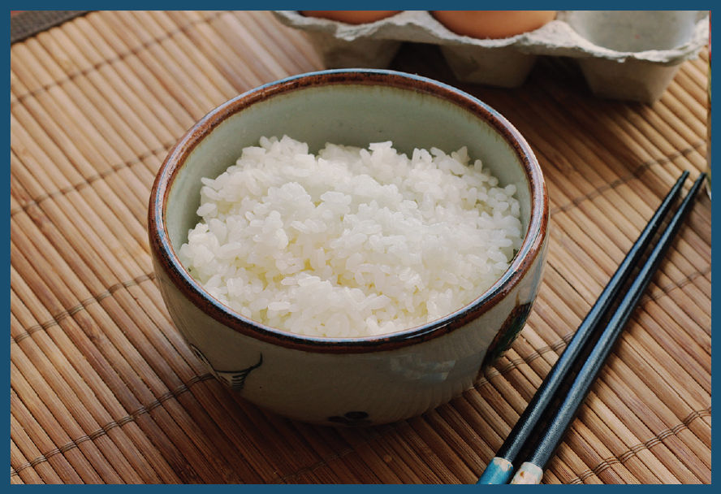

This is a bowl of rice. It is delicious, but it is boring. It is boring in the way that monster-truck shows and movies about aliens aren’t. It’s so boring that the term white rice is used to describe other things that are as boring as it. I could go on about how boring it is, but I’m afraid that this paragraph would then become a little too white rice.

How do you stop having a boring bowl of rice? Top it. A bowl of rice topped with simple simmered, stir-fried, broiled, or pickled ingredients is a staple meal in Japan and other parts of Asia. Growing up, we ate donburi—the Japanese name for both the vessel that topped rice is served in and the dish itself—of one form or another at least once a week. In the following section, I’ll show you how to make a few of the classics. Any of the cooked dishes can be made in your flat-bottomed wok (a 14-inch wok is the perfect size for feeding four) or in smaller skillets for single or double portions. All of the recipes scale easily.